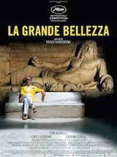
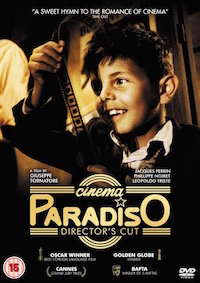

Maxime Merian
Business Developper
Passionate about technology and innovation. I used to work as a business dev for a mobile software company. I want to learn code to have a more polyvalent profile and maybe one day launch my own company.
| Mes Films Préférés | Description |
|---|---|
|  |
La Grande BellezzaRome dans la splendeur de l’été. Les touristes se pressent sur le Janicule : un Japonais s’effondre foudroyé par tant de beauté. Jep Gambardella – un bel homme au charme irrésistible malgré les premiers signes de la vieillesse – jouit des mondanités de la ville. Il est de toutes les soirées et de toutes les fêtes, son esprit fait merveille et sa compagnie recherchée. Journaliste à succès, séducteur impénitent, il a écrit dans sa jeunesse un roman qui lui a valu un prix littéraire et une réputation d’écrivain frustré : il cache son désarroi derrière une attitude cynique et désabusée qui l’amène à poser sur le monde un regard d’une amère lucidité. Sur la terrasse de son appartement romain qui domine le Colisée, il donne des fêtes où se met à nu "l’appareil humain" – c’est le titre de son roman – et se joue la comédie du néant. Revenu de tout, Jep rêve parfois de se remettre à écrire, traversé par les souvenirs d’un amour de jeunesse auquel il se raccroche, mais y parviendra-t-il ? Surmontera-t-il son profond dégoût de lui-même et des autres dans une ville dont l’aveuglante beauté a quelque chose de paralysant… |
|  |
Cinema ParadisoÀ Rome, à la fin des années 1980, Salvatore vient d'apprendre la mort de son vieil ami Alfredo. Par cette nouvelle, c'est toute son enfance qui remonte à la surface : son village natal, en Sicile, quand on l'appelait Totò et qu'il partageait son temps libre entre l'église (où il était enfant de chœur) et la salle de cinéma paroissiale, où régnait Alfredo, le projectionniste qui, au travers des films qu'il projetait, lui apprenait la vie. |

|
Le ParrainEn 1945, à New York, les Corleone sont une des cinq familles de la mafia. Don Vito Corleone, "parrain" de cette famille, marie sa fille à un bookmaker. ... Sonny, un de ses fils, y est quant à lui favorable.Afin de traiter avec Sonny, Sollozzo tente de faire tuer Don Vito, mais celui-ci en réchappe. |